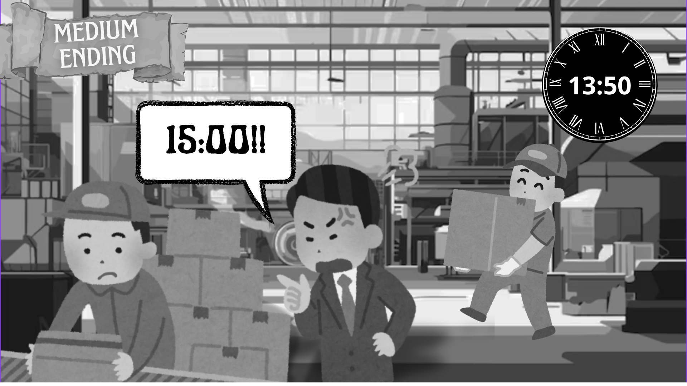

OBRIGADO POR JOGAR!

Você, como grande pensador, fez de tudo para tentar alterar o cenário dos trabalhadores, o que parcialmente afetou o mercado de trabalho. Nem tudo pode ser feito contando com o contexto das situações...
O trabalhador exausto, após a sua intervenção, obteve uma saúde mental melhor, mas ainda chega cansado em casa.
Os prazos foram flexibilizados, o que diminuiu o estresse dos trabalhadores, mas ainda são rígidos.
Os superiores continuam fazendo decisões sem consultar os trabalhadores.
A remuneração foi alterada devidamente.
ㅤㅤㅤㅤ